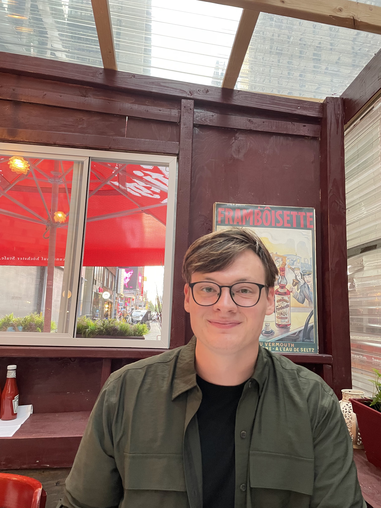

About Me

I am a Robotics MSE candidate within the General Robotics, Automation, Sensing, and Perception (GRASP)
Lab at the University of Pennsylvania, Philadelphia PA. I was previously an undergraduate researcher
within the Institute for Experiential Robotics at Northeastern University, Boston MA. There, I received
my BS degree in computer engineering and computer science.
My professional interest is robotics research. I want to explore how autonomous mobile
robotics can battle the effects of climate change. My research interests include sustainability,
swarm robotics, computer vision, path planning, and automation.
Personally I enjoy activities such as running, travel and basketball. I recently completed the 2023 Philadelphia Marathon and
in 2022 I worked in Genova Italy for 6 months as robotics guest researcher. I would love to hike the Pacific Crest Trail one day
and get a tattoo. But tattoos scare me.
Publications
- L. Milburn, J. Chiaramonte, J. Fenton and T. Padir, "TRASH: Tandem Rover and Aerial Scrap Harvester," 2023 3rd International Conference on Robotics, Automation and Artificial Intelligence (RAAI), Singapore, Singapore, 2023, pp. 259-265, doi: 10.1109/RAAI59955.2023.10601262.
- L. Milburn, J. Gamba, M. Fernandes and C. Semini, "Computer-Vision Based Real Time Waypoint Generation for Autonomous Vineyard Navigation with Quadruped Robots," 2023 IEEE International Conference on Autonomous Robot Systems and Competitions (ICARSC), Tomar, Portugal, 2023, pp. 239-244, doi: 10.1109/ICARSC58346.2023.10129563.
- M. H. Shaham, M. Skopin, H. Hochsztein, K. Mabulu, L. Milburn, J. Tukpah, A. Tunik, J. Winn, M. Zolotas, D. Erdogmus, and T. Padir, "Human-Supervised Automation Test Cell to Accelerate Personal Protective Equipment Manufacturing During the COVID-19 Pandemic," in 2022 IEEE International Symposium on Technologies for Homeland Security (HST), Boston, MA, USA, 2022, pp. 1-8, doi: 10.1109/HST56032.2022.10025429.
- L. Milburn, J. Gamba, and C. Semini, "Towards Computer-Vision Based Vineyard Navigation for Quadruped Robots" in 2022 Institute for Robotics and Intelligent Machines, October 7-9, 2022. https://doi.org/10.5281/zenodo.7531328